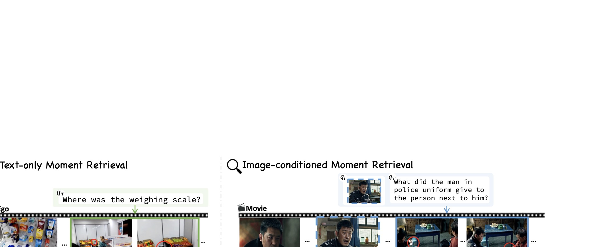
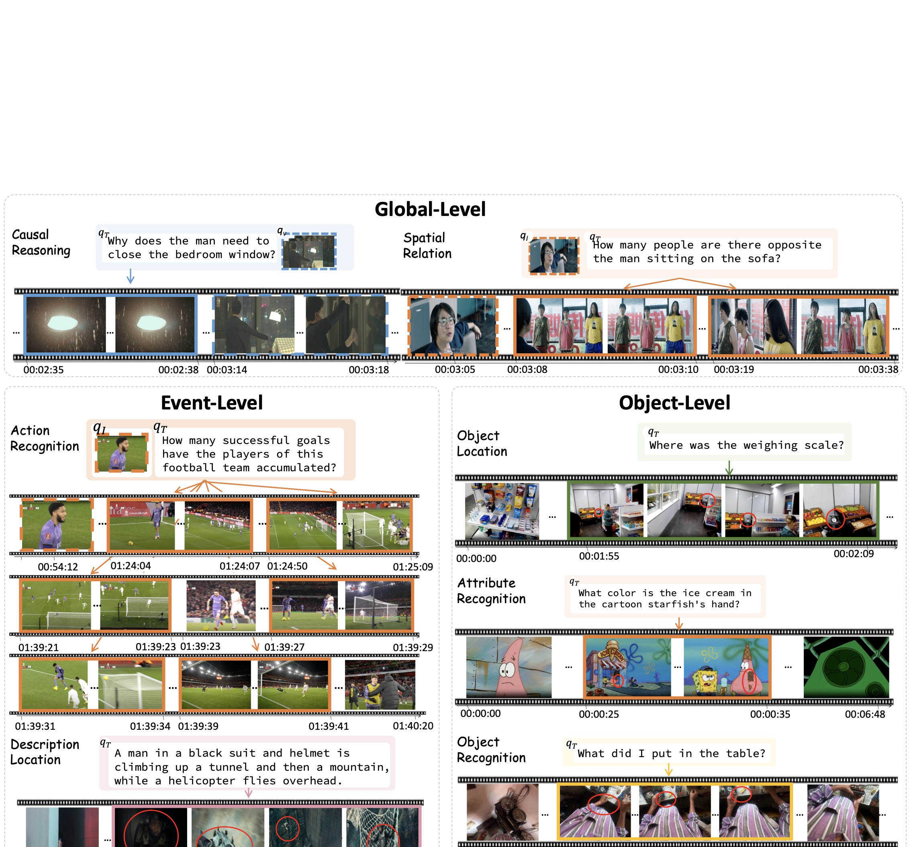
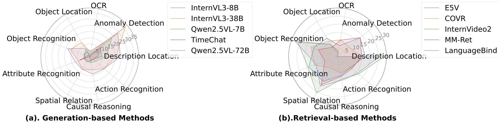
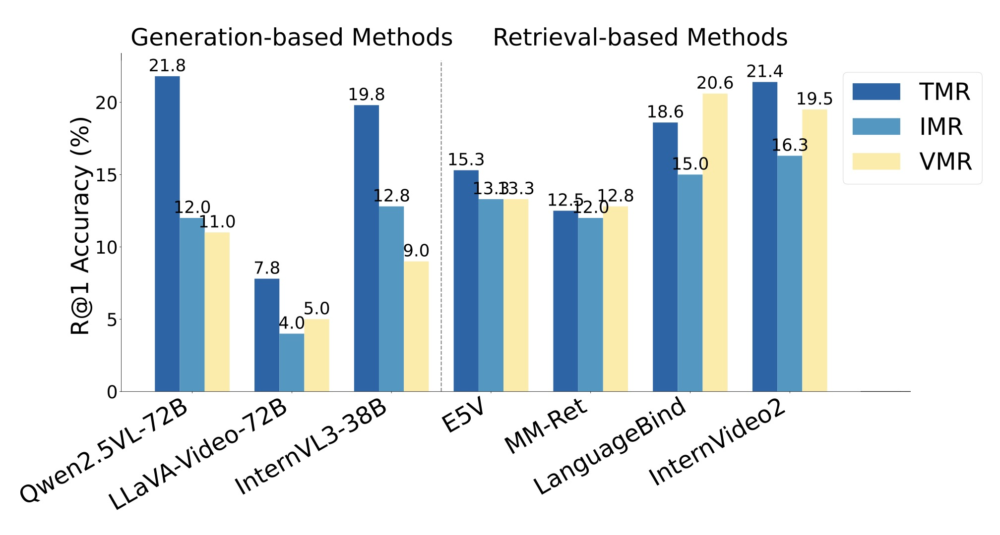
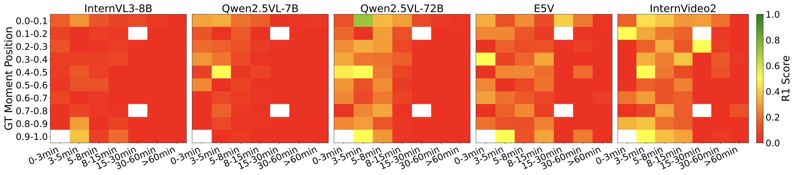
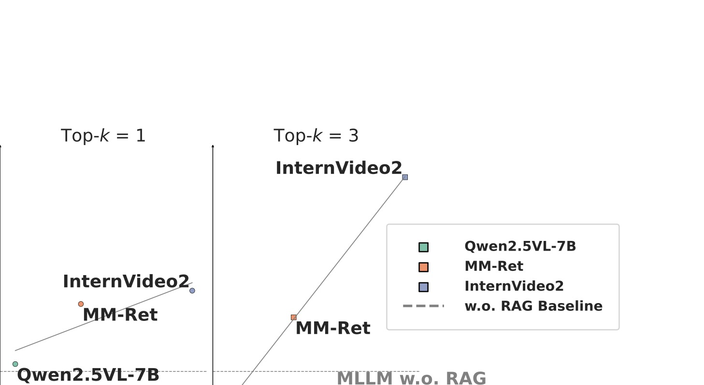
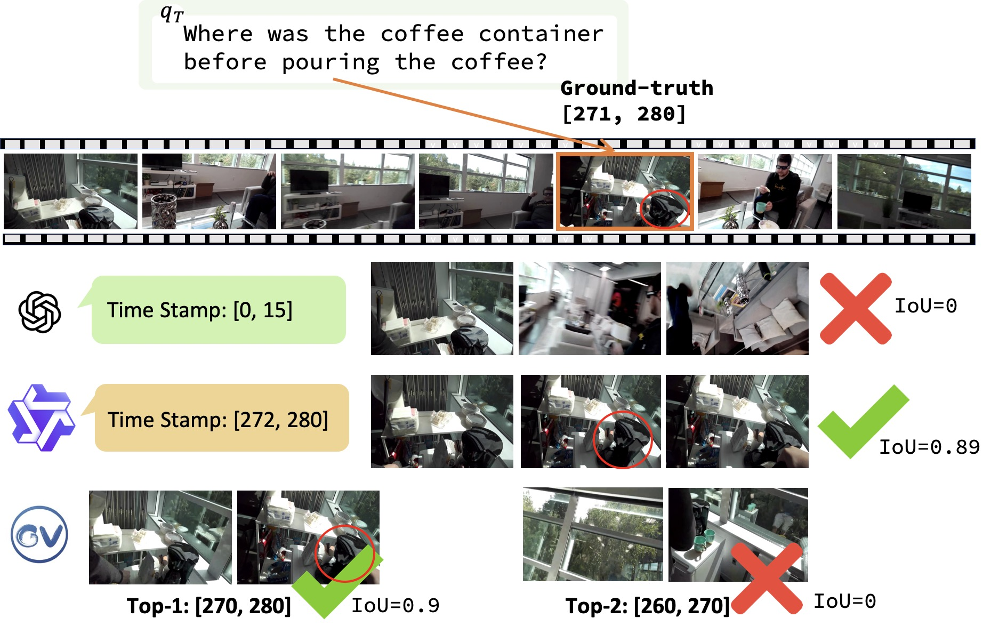
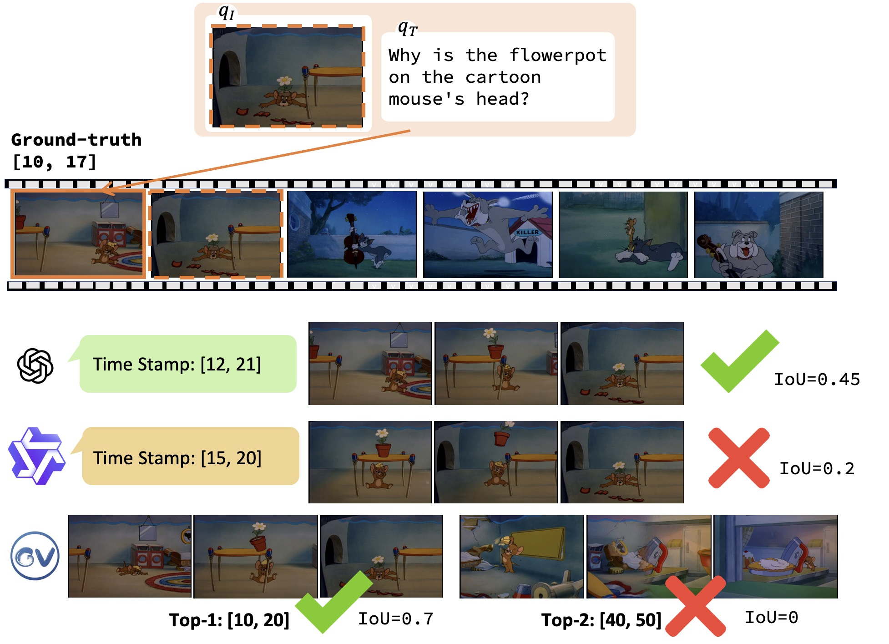
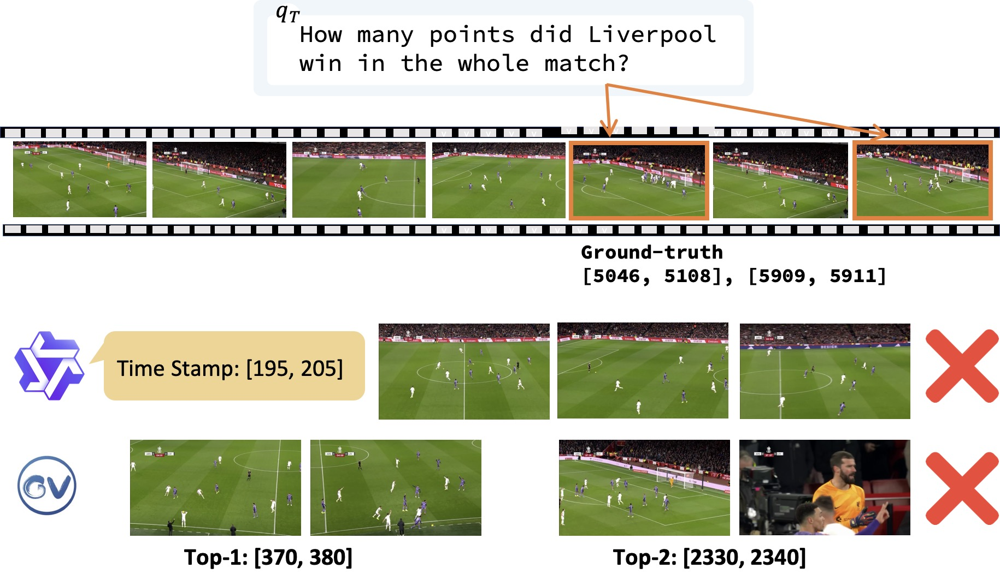

논문 한눈에 보기
MomentSeeker (NeurIPS 2025)는 긴 영상 이해(LVU)의 숨겨진 전제를 정면으로 파고든다. 기존 벤치마크들은 모델이 "맞는 답을 냈는가"만 물었다. 하지만 정말 중요한 질문은 따로 있다 — 모델이 그 답을 내리기 위해 올바른 장면을 찾아냈는가? 이 논문은 그 질문에 처음으로 정량적 기준을 세운다.

Abstract
흐름: 기존 벤치마크의 두 가지 공백 → MomentSeeker의 세 가지 특징 → 실험 결과 예고
기존 벤치마크의 공백
기존 Moment Retrieval 데이터셋은 짧은 영상에 국한되고, LVU 벤치마크는 key moment를 실제로 찾았는지는 평가하지 않는다.
"Existing benchmarks are either severely limited in terms of video length and task diversity, or they focus solely on the end-to-end LVU performance, making them inappropriate for evaluating whether key moments can be accurately accessed."
MomentSeeker의 세 가지 특징
긴·다양한 영상 + 3단계 계층 태스크 + 멀티모달 쿼리 + 사람 annotation — 이 모두가 처음으로 하나의 벤치마크에 담겼다.
"Our results reveal the significant challenges in long-video moment retrieval in terms of accuracy and efficiency, despite improvements from the latest long-video MLLMs and task-specific fine-tuning."
Introduction
흐름: LVU에서 moment 찾기의 중요성 → 기존 두 종류 벤치마크의 각각 한계 → MomentSeeker 제안 + 세 가지 특징 → 기여 요약
LVU와 Moment Retrieval의 관계
긴 영상에는 풍부한 정보가 있지만, 대부분의 태스크는 소수의 핵심 장면에서만 답을 끌어낼 수 있다. 그 장면을 먼저 찾는 것이 LVMR의 목적이다.
"Long-video understanding requires a diverse set of skills from MLLMs, among which the ability to accurately identify and access key moments is crucial."
LVMR은 이중 역할을 한다 — MLLM의 LVU 성능을 직접 반영하는 동시에, RAG 기반 파이프라인의 검색 컴포넌트 개발도 지원한다.
기존 벤치마크들의 한계
기존 Moment Retrieval 데이터셋(CharadesSTA, TVR 등)은 수십 초 짧은 영상에서 자막 기반 단순 쿼리만 다룬다. 반면 LVU 벤치마크(VideoMME, MLVU 등)는 최종 생성 품질만 측정하고 정확한 장면 접근 여부는 무시한다.
"While there have been tasks like visual needle-in-a-haystack (V-NIAH), they rely on synthetic test cases that emphasize frame-level reasoning, which differs fundamentally from the objective of identifying key moments for real-world LVU tasks."
MomentSeeker 제안
평균 1200초 영상, 9종 태스크, 3종 쿼리 모달리티, 1800개 사람 annotation — 최초의 Long-Video Moment Retrieval 전용 벤치마크.
기여는 세 가지다: (1) LVMR 최초 전문 벤치마크 제안, (2) 긴·다양한 영상 + 고품질 사람 레이블로 구성, (3) 정확도와 효율 양면에서 LVMR의 난이도를 정량적으로 밝힘.
Related Work
흐름: LVU 벤치마크 리뷰 → Moment Retrieval 벤치마크 리뷰 → MomentSeeker의 차별점
LVU 벤치마크들
VideoMME, MLVU, LongVideoBench는 end-to-end 생성 품질만 평가하고, moment retrieval 능력은 검증하지 않는다. V-NIAH는 합성 프레임 삽입 방식으로 실제 태스크와 괴리가 있다.
MomentSeeker가 LVU 태스크 분류(인과추론 등)를 채택한 것은 기존 연구와의 해석 연속성을 위해서다. 결정적 차이는 정답 정확도가 아니라 정답 구간의 정확한 검색을 요구한다는 점이다.
"Correct answers do not necessarily imply correct grounding, as models may guess without truly leveraging visual evidence. Empirically, even strong models that perform well on long video understanding benchmarks, such as Qwen2.5-VL-72B achieving 79.1 on VideoMME, obtain only 17.2 R@1 on MomentSeeker."
Moment Retrieval 벤치마크들
기존 Moment Retrieval 데이터셋은 3분 미만 짧은 영상 + 자막/도메인 특화 쿼리에 머물러 있다. 최근 멀티모달 쿼리 grounding 연구들도 짧은 클립에 국한된다.
Ego4D, Ego-Exo4D는 자아중심 데이터를 제공하지만 로컬 물리 행동 위주의 클립 레벨 캡션만 포함한다. MomentSeeker는 스포츠·영화·감시카메라 등 다양한 도메인에 멀티모달 쿼리를 결합해 한층 포괄적인 평가를 가능하게 한다.
MomentSeeker
흐름: Task 정의(수식) → Video Collection → Task Creation(3단계 계층 + 멀티모달 쿼리) → Data Annotation → Evaluation Metrics
Task 정의
LVMR = 쿼리 q가 주어졌을 때 긴 영상 안에서 정답 구간 목록 P를 예측하는 것. 예측과 정답을 IoU로 비교.
모델은 예측 $\mathcal{P} = [p^{(1)}, ..., p^{(k)}]$를 출력하고, 이를 정답 $\mathcal{G} = [g^{(1)}, ..., g^{(m)}]$과 비교한다. 단일 구간일 수도, 여러 구간이 모두 필요한 경우도 있다. 검색 기반 방법은 사전 분할된 청크 중 top-k를 반환하고, 생성 기반 방법은 시간 구간을 직접 출력한다.
Video Collection
실제·영화·시뮬레이션 환경을 아우르는 268개 영상, 평균 1201.9초, 최장 7100초(약 2시간).
올림픽 스포츠, 영화, 자아중심 영상, 카툰, 이상감지 감시카메라 등에서 수집했다. 스포츠·영화·자아중심·카툰은 1080p 이상 고해상도. 감시카메라는 해상도가 낮지만(320×240) 이상 이벤트가 명확히 보이는 것만 엄격히 필터링했다.
Task Creation — 3단계 계층 + 멀티모달 쿼리
Global / Event / Object 세 레벨로 나뉘는 9종 태스크. 각 레벨은 요구하는 추론 범위와 시간적 세밀도가 다르다.
Global-level — 영상의 긴 범위에 걸친 고수준 추론이 필요하다.
- Causal Reasoning: "왜 남자가 침실 창문을 닫아야 했는가?" → 시간적으로 먼 원인 이벤트("밖에 눈이 오고 있다")를 찾아야 한다.
- Spatial Relation: 여러 씬을 통합적으로 이해해야 답할 수 있는 공간적 질문.
Event-level — 특정 행동·이벤트에 대응하는 구간을 찾는다. 전역 태스크보다 범위가 좁지만 객체 태스크보다 넓다.
- Description Location: 상세한 텍스트 묘사를 영상 구간과 매칭.
- Action Recognition: "이 축구팀이 성공시킨 골은 몇 번인가?" 등 행동 식별·계수.
- Anomaly Detection: "이 영상에서 정상 패턴에서 벗어난 활동이 있는가?" — 명시적 단서 없이 이상을 감지.
Object-level — 특정 객체의 속성·위치에 집중하는 짧고 정밀한 구간이 대상이다.
- Object Recognition: "내가 테이블에 뭘 올려놨는가?"
- Object Localization: "저울은 어디에 있었는가?"
- Attribute Classification: "카툰 불가사리 손에 있는 아이스크림은 무슨 색인가?"
- OCR-based Reasoning: "이 선수가 최고점을 획득했는가?" — 영상 내 텍스트 감지·해석.
쿼리 모달리티는 세 종류다: 텍스트만(TMR) / 텍스트+이미지(IMR) / 텍스트+영상(VMR), 비율 5:2:2. 인간은 자연스럽게 여러 모달리티를 조합해 정보를 전달하므로, 이 다양성이 실제 사용 시나리오를 더 잘 반영한다.

Data Annotation
"Answering moment" = 질문에 답하는 데 필요충분한 최소 구간 집합. 단일 세부사항 질문은 하나의 구간, 복수 세부사항 질문은 여러 구간이 필요.
전문 annotator가 문맥이 풍부한 자연어 질문을 직접 작성한다. Description Location 태스크에 한해 강력한 MLLM이 클립 설명 초안을 생성하고, annotator가 검수·정제한다. 모델이 구간을 찾는 방법에는 제약을 두지 않는다 — 검색 기반은 사전 분할 청크에서, 생성 기반은 시간 경계를 직접 예측한다.
품질 관리는 2-pass로 진행된다: rule-based 필터링(중복·무효 구간 제거) → annotator 간 cross-check(질문 명확성·레이블 유효성 확인). Annotation 가이드라인의 핵심은 정답 구간이 질문에 답하기 위한 모든 구간을 빠짐없이, 잘리지 않게 포함해야 한다는 것이다.
Evaluation Metrics
R@1(top-1 정확도)과 mAP@5(top-5 랭킹 품질)를 함께 사용 — 단일 정답 구간과 복수 정답 구간 시나리오를 모두 포괄한다.
Recall@1 (R@1) — top-1 예측이 정답 구간 중 어느 하나와 IoU ≥ 0.3을 충족하면 correct. 여러 정답 구간 중 하나에만 맞아도 된다. 전체 쿼리에 대해 평균.
Mean Average Precision@5 (mAP@5) — top-5 예측의 정확도와 순위 품질을 함께 평가. 각 정답 구간은 한 번만 매칭된다. 맞는 예측이 상위 순위에 있을수록 높은 점수를 받는다. R@1이 단순 hit 여부만 보는 것을 보완한다.
기본 IoU threshold는 0.3이며, Appendix에서 0.1·0.2·0.4·0.5 결과도 제공한다.
Experiments
흐름: 두 가지 접근법 정의 → 검색 기반 세팅 → 생성 기반 세팅 → Main Results(Table) → Analysis 6가지
실험 세팅 — 두 가지 접근법
검색 기반(Retrieval-based) — 영상 전체를 10초 청크로 분할, 쿼리와 각 청크 간 임베딩 유사도를 계산해 top-k 청크를 정답으로 반환. RAG 기반 LVU 시스템의 검색 컴포넌트로도 활용된다. 평가 모델: InternVideo2, LanguageBind(dual-encoder), COVR, MM-RET(compositional), E5V, VLM2VEC(MLLM 기반 임베더).
생성 기반(Generation-based) — 영상 전체(혹은 균일 다운샘플링 프레임)와 쿼리를 MLLM에 입력해 시간 구간 목록을 직접 출력. 평가 모델: GPT-4o, Gemini-2.5-Pro, TimeChat, Lita, Qwen2.5VL(7B/72B), InternVL3(8B/38B), LLaVA-Video(72B), Video-LLaMA3, Eagle2.5, VideoChat-Flash.
Main Results
| Benchmark | Label | Moment-targeted? | Task-oriented? | Avg. Dur (s) | #Videos | #Queries | Domain |
|---|---|---|---|---|---|---|---|
| TVR | Auto | ✓ | ✗ | 76.2 | 1090 | 5450 | TV show |
| CharadesSTA | Human | ✓ | ✗ | 30.6 | 1334 | 3720 | Activity |
| THUMOS14 | Human | ✓ | ✗ | 186.4 | 216 | 3457 | Action |
| QVHighlights | Human | ✓ | ✓ | 150 | 476 | 1542 | Vlog/News |
| VideoMME | Human | ✗ | ✓ | 1021.3 | 900 | 2700 | YouTube |
| MLVU | Human | ✗ | ✓ | 905.8 | 349 | 502 | Open |
| LongVideoBench | Human | ✗ | ✓ | 574.9 | 753 | 1337 | Open |
| V-NIAH | Auto | ✗ | ✓ | — | — | 5 | Open |
| MomentSeeker | Human | ✓ | ✓ | 1201.9 | 268 | 1800 | Open |
| Method | #Size | #Frames | Global-level | Event-level | Object-level | Overall | ||||
|---|---|---|---|---|---|---|---|---|---|---|
| R@1 | mAP@5 | R@1 | mAP@5 | R@1 | mAP@5 | R@1 | mAP@5 | |||
| Generation-based Methods | ||||||||||
| GPT-4o (2024-11-20) | — | 128 | 12.7 | 12.7 | 21.3 | 22.2 | 20.4 | 21.5 | 18.2 | 18.9 |
| Gemini-2.5-Pro | — | 128 | 20.5 | 22.5 | 31.7 | 33.9 | 35.2 | 36.3 | 29.6 | 31.4 |
| TimeChat | 7B | 96 | 2.6 | 2.6 | 6.7 | 6.7 | 4.4 | 4.4 | 5.9 | 5.9 |
| Lita | 13B | 100 | 2.6 | 2.6 | 7.2 | 7.2 | 1.8 | 1.8 | 5.6 | 5.6 |
| Qwen2.5VL | 7B | 768 | 4.6 | 3.8 | 12.0 | 12.2 | 4.3 | 4.2 | 8.1 | 8.0 |
| InternVL3 | 8B | 96 | 3.9 | 3.5 | 7.8 | 8.5 | 4.1 | 4.1 | 5.9 | 6.1 |
| Eagle2.5 | 8B | 256 | 9.3 | 9.2 | 9.3 | 9.4 | 7.2 | 7.4 | 8.7 | 8.7 |
| VideoChat-Flash | 7B | 256 | 2.9 | 3.1 | 9.4 | 9.4 | 7.2 | 7.2 | 7.3 | 7.4 |
| Video-LLaMA3 | 7B | 256 | 11.1 | 9.9 | 20.9 | 19.0 | 12.8 | 11.7 | 16.4 | 14.9 |
| InternVL3 | 38B | 96 | 11.1 | 10.5 | 20.8 | 21.2 | 11.3 | 11.5 | 15.8 | 16.0 |
| LLaVA-Video | 72B | 96 | 3.6 | 3.5 | 8.6 | 9.8 | 4.6 | 5.6 | 6.3 | 7.2 |
| Qwen2.5VL | 72B | 768 | 13.6 | 13.0 | 21.9 | 21.8 | 12.2 | 11.9 | 17.2 | 16.9 |
| Retrieval-based Methods | ||||||||||
| E5V | 8.4B | 1 | 13.1 | 19.5 | 14.5 | 20.7 | 14.9 | 19.8 | 14.3 | 20.1 |
| UniIR | 428M | 1 | 14.9 | 19.4 | 11.5 | 17.9 | 8.2 | 13.9 | 11.2 | 16.9 |
| MM-Ret | 148M | 1 | 14.2 | 17.9 | 13.6 | 19.4 | 9.7 | 15.4 | 12.4 | 17.7 |
| CoVR | 588M | 15 | 9.8 | 15.4 | 13.7 | 19.9 | 14.4 | 18.9 | 13.0 | 18.5 |
| LanguageBind | 428M | 8 | 16.2 | 24.6 | 21.4 | 29.4 | 15.5 | 21.0 | 18.2 | 25.4 |
| InternVideo2 | 1B | 8 | 16.8 | 24.5 | 23.5 | 30.9 | 17.0 | 22.7 | 19.7 | 26.6 |

Analysis
흐름: 전반적 난이도 확인 → 멀티모달 쿼리 약점 → 위치 편향 → 컨텍스트 길이 제약 → 스케일 효과 → RAG 연관성
1. MomentSeeker는 전반적으로 매우 어렵다.
Gemini-2.5-Pro조차 29.6 R@1에 그친다. GPT-4o는 18.2, Qwen2.5VL-72B(VideoMME 79.1 달성)는 겨우 17.2.
"Even advanced MLLMs such as GPT-4o and Gemini 2.5 Pro achieve relatively low scores on our benchmark, highlighting the difficulty of fine-grained temporal grounding."
검색 기반 방법도 마찬가지다. 최고 성능 InternVideo2가 19.7 R@1에 불과한데, 이는 대부분의 검색 모델이 캡션 기반 direct alignment를 위해 튜닝되어 있어, 더 복잡한 instruction 이해와 멀티모달 추론이 필요한 MomentSeeker에 한계를 보이기 때문이다.
2. 멀티모달 쿼리에서 모든 모델이 약해진다.

IMR(이미지 조건부)과 VMR(영상 조건부)에서 TMR(텍스트만) 대비 성능이 뚝 떨어진다. 생성 기반 방법에서 그 격차가 더 크다.
"While current models can handle simpler cross-modal tasks (e.g., cross-modal retrieval) or less complex multi-modal understanding tasks (e.g., basic video understanding) reasonably well, they often fail to capture the deeper relationships required for complex multi-modal reasoning."
3. 생성 기반은 위치 편향, 검색 기반은 위치 무관.

InternVL3-8B는 앞·끝 구간에 집중, Qwen2.5VL-7B는 앞부분에 강한 편향. Qwen2.5VL-72B는 이를 어느 정도 완화. 검색 기반 방법은 모든 청크를 동등하게 취급하므로 위치 무관.
영상이 길어질수록 모든 모델 성능이 하락한다 — 검색 기반은 후보 풀이 커져 랭킹이 어려워지고, 생성 기반은 더 공격적인 다운샘플링으로 정보 손실이 증가한다.
4. 생성 기반은 컨텍스트 길이에 크게 제약된다.
Qwen2.5VL-72B는 768프레임(2fps 기준 약 6.4분) 입력을 지원한다. 8분 미만 영상에서는 검색 기반보다 오히려 앞서는 이유다.
"With sufficiently long context support, generation-based models have a much higher potential ceiling."
실제로 Eagle2.5-8B(256프레임)는 InternVL3-8B(96프레임)보다 전체 점수가 2.77 높아, 더 긴 컨텍스트가 temporal reasoning에 일관되게 도움이 됨을 확인했다.
5. 생성 기반 < 검색 기반이지만, 스케일이 격차를 줄인다.
148M짜리 MM-Ret(12.4 R@1)이 8B InternVL3(5.9 R@1)을 압도한다. 하지만 38B InternVL3는 검색 기반에 근접하기 시작한다.
"While current MLLMs lack strong temporal reasoning, increasing model size helps close the gap."
6. MomentSeeker 성능은 다운스트림 LVU 성능을 예측한다.

Qwen2.5VL·MM-Ret·InternVideo2를 각각 검색기로 쓰고, InternVL3-38B로 LVU 답변을 생성했을 때 — MomentSeeker 검색 성능과 최종 LVU 성능 사이에 양의 상관관계가 확인된다.
"Figure shows a positive correlation between MomentSeeker retriever performance and downstream RAG-based LVU results, indicating our benchmark effectively predicts LVU task capability."
이는 MomentSeeker가 단순 검색 능력 측정을 넘어, LVU 파이프라인 전체의 중간 진단 도구로도 유효함을 보여준다.
Conclusion
MomentSeeker는 긴 영상에서 핵심 장면을 정확히 찾는 것이 현재 최고 모델들에게도 여전히 미해결 과제임을 보여준다. 정확도와 효율 양면에서의 도전이 계속된다.
검색 기반이 생성 기반을 전반적으로 앞서지만, 둘 다 세밀한 temporal reasoning과 복잡한 멀티모달 쿼리에서 한계를 드러낸다. 생성 기반의 스케일업과 컨텍스트 확장 모두 도움이 되지만, 최신 영상 MLLM조차 MomentSeeker에서 고전한다. Moment retrieval 품질이 LVU 성능과 강하게 연관된다는 점에서, MomentSeeker는 중간 진단 벤치마크로서의 가치를 갖는다.
Appendix A — Evaluation Setting
흐름: 하드웨어 세팅 → 검색 기반 세팅 상세 → 생성 기반 프롬프트 상세
하드웨어
모든 실험은 8×A800 GPU(각 80GB) 환경에서 수행됐다.
검색 기반 세팅
임베딩 생성 시 instruction을 주입하고, 모델별 공식 구현을 사용해 재현했다.
영상 모델(LanguageBind, InternVideo2)은 균일 샘플링 8프레임, CoVR는 15프레임(기본 설정). 이미지 모델(E5V, VLM2VEC, UniIR, MM-Ret)은 영상의 중간 프레임을 대표로 사용한다. Instruction은 각 베이스라인의 원래 설정을 따른다.
"Following previous works, we incorporated instructions (e.g., 'Represent the given question in one word.' and 'Represent the video in one word.') to guide the model in generating informative embeddings for queries and candidates."
생성 기반 프롬프트
각 모델은 공식 GitHub 구현과 공식 추천 프레임 수를 사용했다. 프롬프트는 TMR·IMR·VMR 태스크별로 다르다.
GPT-4o는 비용 절감을 위해 180개 샘플 서브셋으로 테스트했으며, 0.5fps로 프레임을 추출하고 128프레임을 초과하면 균일 샘플링한다. 영상은 최대 해상도 384로 리사이즈.
LLaVA-Video / InternVL3 / Qwen2.5VL 공통 TMR 프롬프트 형식:
Identify the most relevant time interval(s) in the video that match the given query or caption.
Format: [[start_1, end_1], ..., [start_n, end_n]], where 1 ≤ n ≤ 5.
Examples:
Single interval: [[0.2, 7.8]]
Multiple intervals: [[0, 10.3], [65.4, 67.3]]
Now, here is the textual query: {query}
IMPORTANT:
1. Return only the list of relevant intervals in Video 1.
2. Do not return more than 5 intervals.
IMR 쿼리에서는 "the given query paired with an image", VMR 쿼리에서는 *"the given query paired with a reference video"*로 표현이 바뀐다.
Appendix B — Annotation Guideline
흐름: Task 1(MR) 가이드 → Task 2(IMR) 가이드 → 품질 요건
Task 1: Video Search (MR)
질문은 구체적이어야 하며, 하나 이상의 연속 구간이 답이 될 수 있어야 한다. 정답 구간은 잘리지 않고, 질문에 답하는 모든 구간을 빠짐없이 포함해야 한다.
예시 질문: "저울은 어디에 있었는가?", "내가 쓰레기통에 무엇을 넣었는가?" 타임스탬프 포맷: [[MM:SS--MM:SS], ...]. 오차 허용 범위: 1초 미만.
Task 2: Image-Conditioned Video Search (IMR)
이미지는 같은 영상의 핵심 프레임이거나 다른 영상의 관련 프레임 모두 가능. 질문은 반드시 선택한 이미지와 직접적으로 연관되어야 하며, 답은 대상 영상에 존재해야 한다.
- 같은 영상 이미지 예시: 도로가 찍힌 이미지 → "이 도로에 나타난 개의 색은?"
- 다른 영상 이미지 예시: 다른 옷차림의 같은 인물 이미지 → "이 사진 속 남자가 옆 사람에게 무엇을 건넸는가?"
품질 요건
타임스탬프 정확도 ±1초 이내. IMR은 이미지·질문·구간 간 논리적 일관성 필수. 크로스 영상 논리 혼용 금지.
Appendix C — 프레임 수 어블레이션
흐름: 적당한 범위에서 프레임 수 증가 효과 → 768프레임의 극적 개선
64~128프레임 범위에서 프레임을 늘려도 성능 변화가 미미하다. 하지만 96→768프레임으로 늘리면 Qwen2.5VL-7B가 4.5→8.1 R@1로 크게 오른다.
"Varying the number of input frames within a moderate range from 64 to 128 has minimal impact on performance... But increasing the number of frames from 96 to 768 for Qwen2.5VL-7B results in a marked performance gain, from 4.5 to 8.1 in R@1."
768프레임 처리는 메모리와 레이턴시 비용이 매우 크다. 밀도 있는 샘플링이 도움이 되지만, 실용적 효율과의 트레이드오프를 고려해야 한다.
| Method | #Size | #Frames | Global R@1 | Event R@1 | Object R@1 | Overall R@1 |
|---|---|---|---|---|---|---|
| Qwen2.5VL | 7B | 64 | 2.6 | 6.8 | 2.2 | 4.5 |
| Qwen2.5VL | 7B | 96 | 1.8 | 7.0 | 2.4 | 4.5 |
| Qwen2.5VL | 7B | 128 | 2.8 | 7.6 | 2.0 | 4.9 |
| Qwen2.5VL | 7B | 256 | 2.3 | 6.8 | 2.0 | 4.4 |
| Qwen2.5VL | 7B | 768 | 4.6 | 12.0 | 4.3 | 8.1 |
| InternVL3 | 38B | 64 | 11.1 | 20.9 | 11.3 | 15.9 |
| InternVL3 | 38B | 96 | 11.1 | 20.8 | 11.3 | 15.8 |
| InternVL3 | 38B | 128 | 11.1 | 20.1 | 11.3 | 15.6 |
Appendix D — IoU 임계값 어블레이션
IoU 임계값을 높일수록(0.1→0.5) 모든 모델 성능이 하락하지만, Section 4에서 도출된 주요 결론(검색≥생성, 스케일 효과, 위치 편향 등)은 어떤 임계값에서도 동일하게 유지된다.
| Method | IoU=0.1 | IoU=0.2 | IoU=0.3 (main) | IoU=0.4 | IoU=0.5 |
|---|---|---|---|---|---|
| Generation-based | |||||
| InternVL3-8B | 10.3 | 8.0 | 5.9 | 4.1 | 3.0 |
| InternVL3-38B | 26.3 | 21.0 | 15.8 | 11.9 | 9.0 |
| Qwen2.5VL-7B (768f) | 15.7 | 11.7 | 8.1 | 5.9 | 4.4 |
| Qwen2.5VL-72B (768f) | 25.7 | 21.3 | 17.2 | 12.3 | 9.0 |
| LLaVA-Video-72B | 12.3 | 8.7 | 6.3 | 4.3 | 2.5 |
| Retrieval-based | |||||
| E5V | 24.1 | 20.3 | 14.3 | 9.7 | 6.3 |
| CoVR | 20.4 | 17.4 | 13.0 | 9.5 | 6.6 |
| LanguageBind | 32.6 | 26.8 | 18.2 | 13.5 | 8.9 |
| InternVideo2 | 32.7 | — | 19.7 | 15.1 | 11.0 |
Appendix E — Visualization Results
흐름: GPT-4o / Qwen2.5VL-72B / InternVideo2 케이스 스터디 3개
세 케이스 스터디는 각기 다른 실패 패턴을 보여준다 — 생성 기반의 위치 편향, 멀티모달 쿼리 처리 실패, 검색 기반의 의미 추론 한계.



Limitations & Future Work
흐름: 비용 제약으로 인한 폐쇄 모델 커버리지 한계 → 아키텍처 분석 부재 → 두 가지 미래 방향
한계
GPT-4o 한 번 쿼리당 약 $2 — 1,800개 전체 평가에 $3,600이 든다. 이 때문에 다른 폐쇄 소스 모델은 평가하지 못했다. 또한 temporal embedding 설계 등 모델 내부 아키텍처 요인은 분석하지 않았다.
"We do not delve into model-specific architectural choices, such as the design of temporal embeddings or structural adaptations to enhance temporal reasoning in MLLMs."
Future Work
두 방향이 유망하다: ① MLLM의 temporal awareness 강화, ② 경량 검색기와 RAG 프레임워크의 결합으로 효율 향상.
"By advancing both directions together, we may improve the accuracy of existing LVU models on downstream tasks by enhancing their temporal awareness."